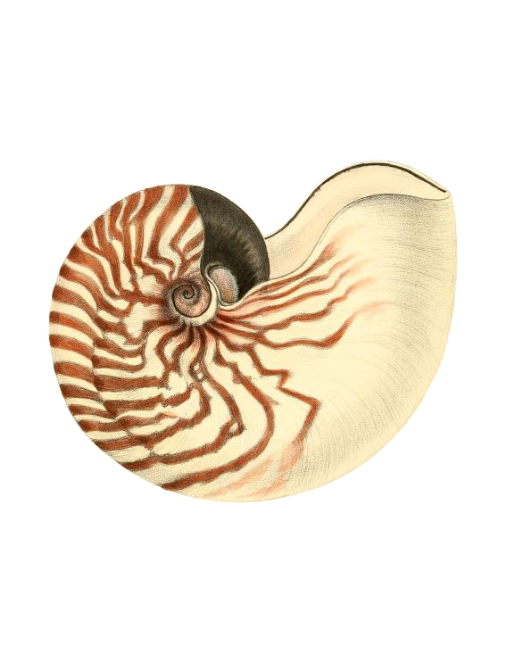

O-STRATA
‹
Pads
Torus Bloom
›
★
Geometric Microtonal Wavetable Synthesizer
⚙
Language
English
Français
简体中文
Hover help
On
Synth
Mod
Tuning
Effects
Geometry
Oscillator A
⬡
≋
Drop OBJ · STL · PNG
Source
Mesh
Volume
Terrain
Mesh
Warp
Off
Sync
Bend
FM
Window
Oscillator B
⬡
≋
Drop OBJ · STL · PNG
Source
Mesh
Volume
Terrain
Mesh
Warp
Off
Sync
Bend
FM
Window
Sub Oscillator
Shape
Sine
Triangle
Saw
Square
Octave
-1 Oct
-2 Oct
-3 Oct
-4 Oct
Routing
Post-Filter
Pre-Filter
Noise
Type
White
Pink
Brown
Digital
Vinyl
Wind
Performance
Glide Mode
Off
Legato
Always
Filter A
Type
LP12
LP24
HP12
HP24
BP12
BP24
Notch
Filter Routing
Serial
Parallel
Filter B
Type
LP12
LP24
HP12
HP24
BP12
BP24
Notch
Amp Envelope
Filter Envelope
Modulation Matrix
Route any source to any destination. 16 slots available.
On
#
Source
Destination
Amount
Intervals (12)
Tonic
◀
C
▶
Circle
Polar
Matrix
True Keys
Rotation
Scale Intervals
Hold 2+ notes to see intervals
Tuning Library
▼
All Categories
Historical
Just Intonation
Equal Divisions
Non-Octave
World
A4 Ref
440.0 Hz
12-TET Standard
Stretch
1.00
Load .SCL
Load .KBM
Save .SCL
Save .KBM
Export HTML
Generate Scale
▼
EDO (Equal Division)
Harmonic Series
Rank-2 Temperament
Divisions
Period (cents)
Generate
Delay
ON
Mode
Normal
PingPong
Sync
Off
Division
1/1
1/2
1/4
1/8
1/16
1/32
1/1D
1/2D
1/4D
1/8D
1/16D
1/32D
1/1T
1/2T
1/4T
1/8T
1/16T
1/32T
Chorus
ON
Distortion
ON
Type
SoftClip
HardClip
Tube
Fold
Reverb
ON
3-Band EQ
ON

Osc A
Osc B
Source
Mesh
Volume
Terrain
Frames
64
128
256
Mesh
Import…
Baked
·
38 ms
·
256
frames
⬡
≋
frame 1/256 · φ 0.00
3D view unavailable — showing Canvas fallback
Drop OBJ · STL · PNG
drag
tilt slice
wheel
projection
φ
drag
rotate view
wheel
sweep range
drag
orbit centre
wheel
sweep range
alt-click
reset knob